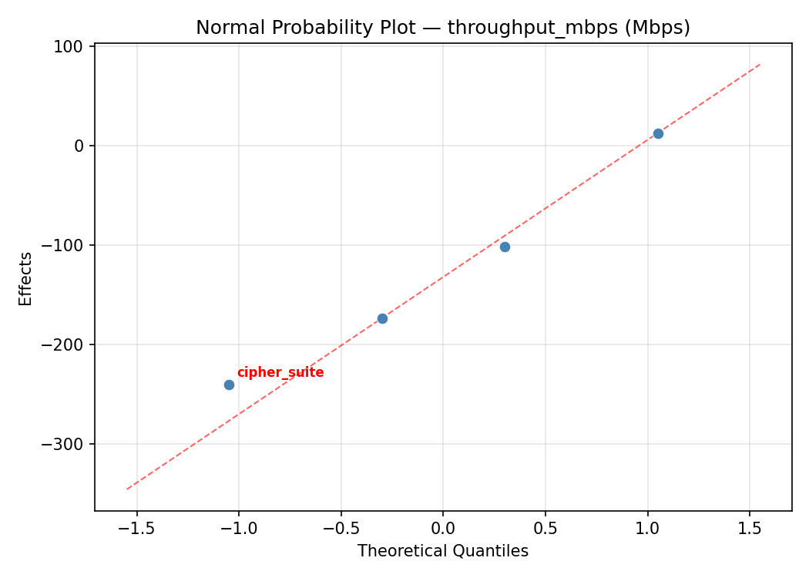
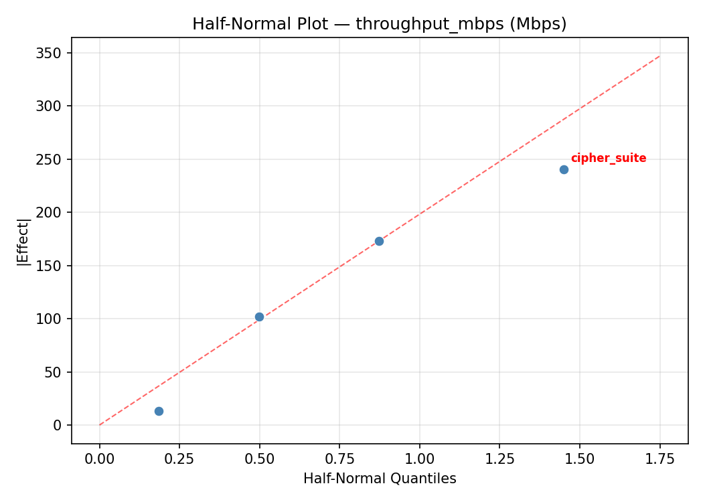
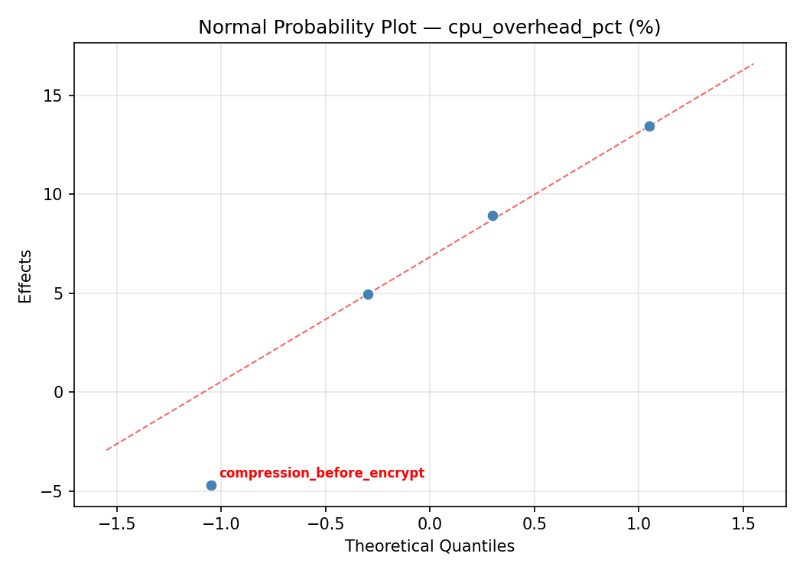
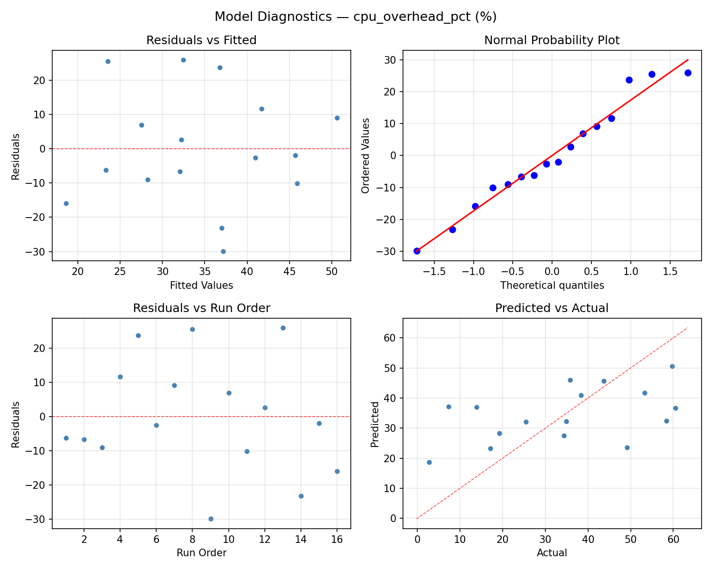

Summary
This experiment investigates encryption pipeline optimization. Full factorial of cipher suite, key size, compression, and hardware acceleration for throughput and CPU overhead.
The design varies 4 factors: cipher suite, ranging from aes128 to aes256, key size (bits), ranging from 128 to 256, compression before encrypt, ranging from off to on, and hardware acceleration, ranging from off to on. The goal is to optimize 2 responses: throughput mbps (Mbps) (maximize) and cpu overhead pct (%) (minimize). Fixed conditions held constant across all runs include protocol = tls1.3, mode = gcm.
A full factorial design was used to explore all 16 possible combinations of the 4 factors at two levels. This guarantees that every main effect and interaction can be estimated independently, at the cost of a larger experiment (16 runs).
Quadratic response surface models were fitted to capture potential curvature and factor interactions. The RSM contour plots below visualize how pairs of factors jointly affect each response.
Key Findings
For throughput mbps, the most influential factors were key size (34.3%), cipher suite (32.6%), hardware acceleration (28.9%). The best observed value was 1329.0 (at cipher suite = aes128, key size = 128, compression before encrypt = on).
For cpu overhead pct, the most influential factors were cipher suite (35.7%), key size (33.6%), hardware acceleration (19.8%). The best observed value was 2.7 (at cipher suite = aes128, key size = 128, compression before encrypt = on).
Recommended Next Steps
- Consider whether any fixed factors should be varied in a future study.
Experimental Setup
Factors
| Factor | Low | High | Unit |
|---|
cipher_suite | aes128 | aes256 | |
key_size | 128 | 256 | bits |
compression_before_encrypt | off | on | |
hardware_acceleration | off | on | |
Fixed: protocol = tls1.3, mode = gcm
Responses
| Response | Direction | Unit |
|---|
throughput_mbps | ↑ maximize | Mbps |
cpu_overhead_pct | ↓ minimize | % |
Configuration
{
"metadata": {
"name": "Encryption Pipeline Optimization",
"description": "Full factorial of cipher suite, key size, compression, and hardware acceleration for throughput and CPU overhead"
},
"factors": [
{
"name": "cipher_suite",
"levels": [
"aes128",
"aes256"
],
"type": "categorical",
"unit": ""
},
{
"name": "key_size",
"levels": [
"128",
"256"
],
"type": "continuous",
"unit": "bits"
},
{
"name": "compression_before_encrypt",
"levels": [
"off",
"on"
],
"type": "categorical",
"unit": ""
},
{
"name": "hardware_acceleration",
"levels": [
"off",
"on"
],
"type": "categorical",
"unit": ""
}
],
"fixed_factors": {
"protocol": "tls1.3",
"mode": "gcm"
},
"responses": [
{
"name": "throughput_mbps",
"optimize": "maximize",
"unit": "Mbps"
},
{
"name": "cpu_overhead_pct",
"optimize": "minimize",
"unit": "%"
}
],
"settings": {
"operation": "full_factorial",
"test_script": "use_cases/58_encryption_pipeline/sim.sh"
}
}
Experimental Matrix
The Full Factorial Design produces 16 runs. Each row is one experiment with specific factor settings.
| Run | cipher_suite | key_size | compression_before_encrypt | hardware_acceleration |
|---|
| 1 | aes128 | 256 | on | on |
| 2 | aes256 | 128 | off | on |
| 3 | aes128 | 256 | off | on |
| 4 | aes128 | 256 | on | off |
| 5 | aes256 | 256 | on | off |
| 6 | aes256 | 128 | on | off |
| 7 | aes256 | 256 | off | off |
| 8 | aes256 | 128 | off | off |
| 9 | aes128 | 128 | off | on |
| 10 | aes128 | 128 | on | off |
| 11 | aes256 | 256 | off | on |
| 12 | aes256 | 256 | on | on |
| 13 | aes128 | 256 | off | off |
| 14 | aes256 | 128 | on | on |
| 15 | aes128 | 128 | off | off |
| 16 | aes128 | 128 | on | on |
Step-by-Step Workflow
1
Preview the design
$ python doe.py info --config use_cases/58_encryption_pipeline/config.json
2
Generate the runner script
$ python doe.py generate --config use_cases/58_encryption_pipeline/config.json \
--output use_cases/58_encryption_pipeline/results/run.sh --seed 42
3
Execute the experiments
$ bash use_cases/58_encryption_pipeline/results/run.sh
4
Analyze results
$ python doe.py analyze --config use_cases/58_encryption_pipeline/config.json
5
Get optimization recommendations
$ python doe.py optimize --config use_cases/58_encryption_pipeline/config.json
6
Multi-objective optimization
With 2 competing responses, use --multi to find the best compromise via Derringer–Suich desirability.
$ python doe.py optimize --config use_cases/58_encryption_pipeline/config.json --multi
7
Generate the HTML report
$ python doe.py report --config use_cases/58_encryption_pipeline/config.json \
--output use_cases/58_encryption_pipeline/results/report.html
Features Exercised
| Feature | Value |
|---|
| Design type | full_factorial |
| Factor types | continuous (1), categorical (3) |
| Arg style | double-dash |
| Responses | 2 (throughput_mbps ↑, cpu_overhead_pct ↓) |
| Total runs | 16 |
Analysis Results
Generated from actual experiment runs using the DOE Helper Tool.
Response: throughput_mbps
Top factors: key_size (34.3%), cipher_suite (32.6%), hardware_acceleration (28.9%).
ANOVA
| Source | DF | SS | MS | F | p-value |
|---|
| Source | DF | SS | MS | F | p-value |
| cipher_suite | 1 | 91506.2500 | 91506.2500 | 1.045 | 0.3536 |
| key_size | 1 | 101124.0000 | 101124.0000 | 1.155 | 0.3316 |
| compression_before_encrypt | 1 | 1482.2500 | 1482.2500 | 0.017 | 0.9016 |
| hardware_acceleration | 1 | 72092.2500 | 72092.2500 | 0.823 | 0.4058 |
| cipher_suite*key_size | 1 | 114921.0000 | 114921.0000 | 1.312 | 0.3038 |
| cipher_suite*compression_before_encrypt | 1 | 177662.2500 | 177662.2500 | 2.029 | 0.2136 |
| cipher_suite*hardware_acceleration | 1 | 166872.2500 | 166872.2500 | 1.906 | 0.2260 |
| key_size*compression_before_encrypt | 1 | 110889.0000 | 110889.0000 | 1.266 | 0.3116 |
| key_size*hardware_acceleration | 1 | 19321.0000 | 19321.0000 | 0.221 | 0.6583 |
| compression_before_encrypt*hardware_acceleration | 1 | 2070.2500 | 2070.2500 | 0.024 | 0.8838 |
| Error | 5 | 437839.2500 | 87567.8500 | | |
| Total | 15 | 1295779.7500 | 86385.3167 | | |
Pareto Chart

Main Effects Plot

Normal Probability Plot of Effects

Half-Normal Plot of Effects

Model Diagnostics

Response: cpu_overhead_pct
Top factors: cipher_suite (35.7%), key_size (33.6%), hardware_acceleration (19.8%).
ANOVA
| Source | DF | SS | MS | F | p-value |
|---|
| Source | DF | SS | MS | F | p-value |
| cipher_suite | 1 | 650.2500 | 650.2500 | 1.578 | 0.2645 |
| key_size | 1 | 573.6025 | 573.6025 | 1.392 | 0.2911 |
| compression_before_encrypt | 1 | 60.0625 | 60.0625 | 0.146 | 0.7183 |
| hardware_acceleration | 1 | 200.2225 | 200.2225 | 0.486 | 0.5168 |
| cipher_suite*key_size | 1 | 316.8400 | 316.8400 | 0.769 | 0.4207 |
| cipher_suite*compression_before_encrypt | 1 | 615.0400 | 615.0400 | 1.493 | 0.2762 |
| cipher_suite*hardware_acceleration | 1 | 466.5600 | 466.5600 | 1.132 | 0.3359 |
| key_size*compression_before_encrypt | 1 | 248.0625 | 248.0625 | 0.602 | 0.4729 |
| key_size*hardware_acceleration | 1 | 150.0625 | 150.0625 | 0.364 | 0.5725 |
| compression_before_encrypt*hardware_acceleration | 1 | 4.6225 | 4.6225 | 0.011 | 0.9198 |
| Error | 5 | 2060.1325 | 412.0265 | | |
| Total | 15 | 5345.4575 | 356.3638 | | |
Pareto Chart

Main Effects Plot

Normal Probability Plot of Effects

Half-Normal Plot of Effects

Model Diagnostics

Multi-Objective Optimization
When responses compete, Derringer–Suich desirability finds the best compromise.
Each response is scaled to a 0–1 desirability, then combined via a weighted geometric mean.
Overall Desirability
D = 0.9545
Per-Response Desirability
| Response | Weight | Desirability | Predicted | Dir |
|---|
throughput_mbps |
1.5 |
|
1329.00 0.9545 1329.00 Mbps |
↑ |
cpu_overhead_pct |
1.0 |
|
2.70 0.9545 2.70 % |
↓ |
Recommended Settings
| Factor | Value |
|---|
cipher_suite | aes128 |
key_size | 128 bits |
compression_before_encrypt | off |
hardware_acceleration | on |
Source: from observed run #16
Trade-off Summary
Sacrifice = how much worse than single-objective best.
| Response | Predicted | Best Observed | Sacrifice |
|---|
cpu_overhead_pct | 2.70 | 2.70 | +0.00 |
Top 3 Runs by Desirability
| Run | D | Factor Settings |
|---|
| #9 | 0.8618 | cipher_suite=aes256, key_size=256, compression_before_encrypt=off, hardware_acceleration=off |
| #1 | 0.7832 | cipher_suite=aes256, key_size=128, compression_before_encrypt=on, hardware_acceleration=on |
Model Quality
| Response | R² | Type |
|---|
cpu_overhead_pct | 0.2704 | linear |
Full Multi-Objective Output
============================================================
MULTI-OBJECTIVE OPTIMIZATION
Method: Derringer-Suich Desirability Function
============================================================
Overall desirability: D = 0.9545
Response Weight Desirability Predicted Direction
---------------------------------------------------------------------
throughput_mbps 1.5 0.9545 1329.00 Mbps ↑
cpu_overhead_pct 1.0 0.9545 2.70 % ↓
Recommended settings:
cipher_suite = aes128
key_size = 128 bits
compression_before_encrypt = off
hardware_acceleration = on
(from observed run #16)
Trade-off summary:
throughput_mbps: 1329.00 (best observed: 1329.00, sacrifice: +0.00)
cpu_overhead_pct: 2.70 (best observed: 2.70, sacrifice: +0.00)
Model quality:
throughput_mbps: R² = 0.2208 (linear)
cpu_overhead_pct: R² = 0.2704 (linear)
Top 3 observed runs by overall desirability:
1. Run #16 (D=0.9545): cipher_suite=aes128, key_size=128, compression_before_encrypt=off, hardware_acceleration=on
2. Run #9 (D=0.8618): cipher_suite=aes256, key_size=256, compression_before_encrypt=off, hardware_acceleration=off
3. Run #1 (D=0.7832): cipher_suite=aes256, key_size=128, compression_before_encrypt=on, hardware_acceleration=on
Full Analysis Output
=== Main Effects: throughput_mbps ===
Factor Effect Std Error % Contribution
--------------------------------------------------------------
key_size 159.0000 73.4784 34.3%
cipher_suite 151.2500 73.4784 32.6%
hardware_acceleration -134.2500 73.4784 28.9%
compression_before_encrypt 19.2500 73.4784 4.2%
=== ANOVA Table: throughput_mbps ===
Source DF SS MS F p-value
-----------------------------------------------------------------------------
cipher_suite 1 91506.2500 91506.2500 1.045 0.3536
key_size 1 101124.0000 101124.0000 1.155 0.3316
compression_before_encrypt 1 1482.2500 1482.2500 0.017 0.9016
hardware_acceleration 1 72092.2500 72092.2500 0.823 0.4058
cipher_suite*key_size 1 114921.0000 114921.0000 1.312 0.3038
cipher_suite*compression_before_encrypt 1 177662.2500 177662.2500 2.029 0.2136
cipher_suite*hardware_acceleration 1 166872.2500 166872.2500 1.906 0.2260
key_size*compression_before_encrypt 1 110889.0000 110889.0000 1.266 0.3116
key_size*hardware_acceleration 1 19321.0000 19321.0000 0.221 0.6583
compression_before_encrypt*hardware_acceleration 1 2070.2500 2070.2500 0.024 0.8838
Error 5 437839.2500 87567.8500
Total 15 1295779.7500 86385.3167
=== Interaction Effects: throughput_mbps ===
Factor A Factor B Interaction % Contribution
------------------------------------------------------------------------
cipher_suite compression_before_encrypt 210.7500 25.0%
cipher_suite hardware_acceleration -204.2500 24.2%
cipher_suite key_size 169.5000 20.1%
key_size compression_before_encrypt 166.5000 19.7%
key_size hardware_acceleration -69.5000 8.2%
compression_before_encrypt hardware_acceleration -22.7500 2.7%
=== Summary Statistics: throughput_mbps ===
cipher_suite:
Level N Mean Std Min Max
------------------------------------------------------------
aes128 8 734.5000 283.1446 387.0000 1192.0000
aes256 8 885.7500 303.0977 564.0000 1329.0000
key_size:
Level N Mean Std Min Max
------------------------------------------------------------
128 8 730.6250 298.4215 387.0000 1192.0000
256 8 889.6250 285.6741 487.0000 1329.0000
compression_before_encrypt:
Level N Mean Std Min Max
------------------------------------------------------------
off 8 800.5000 281.4427 487.0000 1219.0000
on 8 819.7500 325.0994 387.0000 1329.0000
hardware_acceleration:
Level N Mean Std Min Max
------------------------------------------------------------
off 8 877.2500 313.1849 484.0000 1329.0000
on 8 743.0000 276.9977 387.0000 1192.0000
=== Main Effects: cpu_overhead_pct ===
Factor Effect Std Error % Contribution
--------------------------------------------------------------
cipher_suite -12.7500 4.7194 35.7%
key_size -11.9750 4.7194 33.6%
hardware_acceleration 7.0750 4.7194 19.8%
compression_before_encrypt -3.8750 4.7194 10.9%
=== ANOVA Table: cpu_overhead_pct ===
Source DF SS MS F p-value
-----------------------------------------------------------------------------
cipher_suite 1 650.2500 650.2500 1.578 0.2645
key_size 1 573.6025 573.6025 1.392 0.2911
compression_before_encrypt 1 60.0625 60.0625 0.146 0.7183
hardware_acceleration 1 200.2225 200.2225 0.486 0.5168
cipher_suite*key_size 1 316.8400 316.8400 0.769 0.4207
cipher_suite*compression_before_encrypt 1 615.0400 615.0400 1.493 0.2762
cipher_suite*hardware_acceleration 1 466.5600 466.5600 1.132 0.3359
key_size*compression_before_encrypt 1 248.0625 248.0625 0.602 0.4729
key_size*hardware_acceleration 1 150.0625 150.0625 0.364 0.5725
compression_before_encrypt*hardware_acceleration 1 4.6225 4.6225 0.011 0.9198
Error 5 2060.1325 412.0265
Total 15 5345.4575 356.3638
=== Interaction Effects: cpu_overhead_pct ===
Factor A Factor B Interaction % Contribution
------------------------------------------------------------------------
cipher_suite compression_before_encrypt -12.4000 26.3%
cipher_suite hardware_acceleration 10.8000 22.9%
cipher_suite key_size -8.9000 18.9%
key_size compression_before_encrypt -7.8750 16.7%
key_size hardware_acceleration 6.1250 13.0%
compression_before_encrypt hardware_acceleration -1.0750 2.3%
=== Summary Statistics: cpu_overhead_pct ===
cipher_suite:
Level N Mean Std Min Max
------------------------------------------------------------
aes128 8 40.9875 17.5955 17.1000 60.5000
aes256 8 28.2375 19.0038 2.7000 53.3000
key_size:
Level N Mean Std Min Max
------------------------------------------------------------
128 8 40.6000 17.7991 13.9000 59.7000
256 8 28.6250 19.1020 2.7000 60.5000
compression_before_encrypt:
Level N Mean Std Min Max
------------------------------------------------------------
off 8 36.5500 17.9421 7.3000 60.5000
on 8 32.6750 20.8119 2.7000 59.7000
hardware_acceleration:
Level N Mean Std Min Max
------------------------------------------------------------
off 8 31.0750 21.0138 2.7000 58.4000
on 8 38.1500 17.1305 17.1000 60.5000
Optimization Recommendations
=== Optimization: throughput_mbps ===
Direction: maximize
Best observed run: #16
cipher_suite = aes128
key_size = 128
compression_before_encrypt = on
hardware_acceleration = off
Value: 1329.0
RSM Model (linear, R² = 0.4401, Adj R² = 0.2365):
Coefficients:
intercept +810.1250
cipher_suite -82.0000
key_size -136.2500
compression_before_encrypt -1.1250
hardware_acceleration -101.7500
RSM Model (quadratic, R² = 0.6708, Adj R² = -3.9381):
Coefficients:
intercept +162.0250
cipher_suite -82.0000
key_size -136.2500
compression_before_encrypt -1.1250
hardware_acceleration -101.7500
cipher_suite*key_size -27.3750
cipher_suite*compression_before_encrypt -35.7500
cipher_suite*hardware_acceleration -56.8750
key_size*compression_before_encrypt -89.0000
key_size*hardware_acceleration +73.3750
compression_before_encrypt*hardware_acceleration +10.7500
cipher_suite^2 +162.0250
key_size^2 +162.0250
compression_before_encrypt^2 +162.0250
hardware_acceleration^2 +162.0250
Curvature analysis:
compression_before_encrypt coef=+162.0250 convex (has a minimum)
key_size coef=+162.0250 convex (has a minimum)
hardware_acceleration coef=+162.0250 convex (has a minimum)
cipher_suite coef=+162.0250 convex (has a minimum)
Notable interactions:
key_size*compression_before_encrypt coef=-89.0000 (antagonistic)
key_size*hardware_acceleration coef=+73.3750 (synergistic)
cipher_suite*hardware_acceleration coef=-56.8750 (antagonistic)
cipher_suite*compression_before_encrypt coef=-35.7500 (antagonistic)
cipher_suite*key_size coef=-27.3750 (antagonistic)
compression_before_encrypt*hardware_acceleration coef=+10.7500 (synergistic)
Predicted optimum (from linear model, at observed points):
cipher_suite = aes128
key_size = 128
compression_before_encrypt = off
hardware_acceleration = off
Predicted value: 1131.2500
Surface optimum (via L-BFGS-B, linear model):
cipher_suite = aes128
key_size = 128
compression_before_encrypt = off
hardware_acceleration = off
Predicted value: 1131.2500
Model quality: Weak fit — consider adding center points or using a different design.
Factor importance:
1. key_size (effect: -272.5, contribution: 42.4%)
2. hardware_acceleration (effect: -203.5, contribution: 31.7%)
3. cipher_suite (effect: -164.0, contribution: 25.5%)
4. compression_before_encrypt (effect: -2.2, contribution: 0.4%)
=== Optimization: cpu_overhead_pct ===
Direction: minimize
Best observed run: #16
cipher_suite = aes128
key_size = 128
compression_before_encrypt = on
hardware_acceleration = off
Value: 2.7
RSM Model (linear, R² = 0.4471, Adj R² = 0.2460):
Coefficients:
intercept +34.6125
cipher_suite +5.5000
key_size +8.5875
compression_before_encrypt +0.8000
hardware_acceleration +6.6875
RSM Model (quadratic, R² = 0.6779, Adj R² = -3.8317):
Coefficients:
intercept +6.9225
cipher_suite +5.5000
key_size +8.5875
compression_before_encrypt +0.8000
hardware_acceleration +6.6875
cipher_suite*key_size -0.1000
cipher_suite*compression_before_encrypt +1.8875
cipher_suite*hardware_acceleration +2.6000
key_size*compression_before_encrypt +7.0500
key_size*hardware_acceleration -3.9625
compression_before_encrypt*hardware_acceleration -1.1750
cipher_suite^2 +6.9225
key_size^2 +6.9225
compression_before_encrypt^2 +6.9225
hardware_acceleration^2 +6.9225
Curvature analysis:
cipher_suite coef=+6.9225 convex (has a minimum)
hardware_acceleration coef=+6.9225 convex (has a minimum)
key_size coef=+6.9225 convex (has a minimum)
compression_before_encrypt coef=+6.9225 convex (has a minimum)
Notable interactions:
key_size*compression_before_encrypt coef=+7.0500 (synergistic)
key_size*hardware_acceleration coef=-3.9625 (antagonistic)
cipher_suite*hardware_acceleration coef=+2.6000 (synergistic)
cipher_suite*compression_before_encrypt coef=+1.8875 (synergistic)
compression_before_encrypt*hardware_acceleration coef=-1.1750 (antagonistic)
Predicted optimum (from linear model, at observed points):
cipher_suite = aes256
key_size = 256
compression_before_encrypt = on
hardware_acceleration = on
Predicted value: 56.1875
Surface optimum (via L-BFGS-B, linear model):
cipher_suite = aes128
key_size = 128
compression_before_encrypt = off
hardware_acceleration = off
Predicted value: 13.0375
Model quality: Weak fit — consider adding center points or using a different design.
Factor importance:
1. key_size (effect: 17.2, contribution: 39.8%)
2. hardware_acceleration (effect: 13.4, contribution: 31.0%)
3. cipher_suite (effect: 11.0, contribution: 25.5%)
4. compression_before_encrypt (effect: 1.6, contribution: 3.7%)